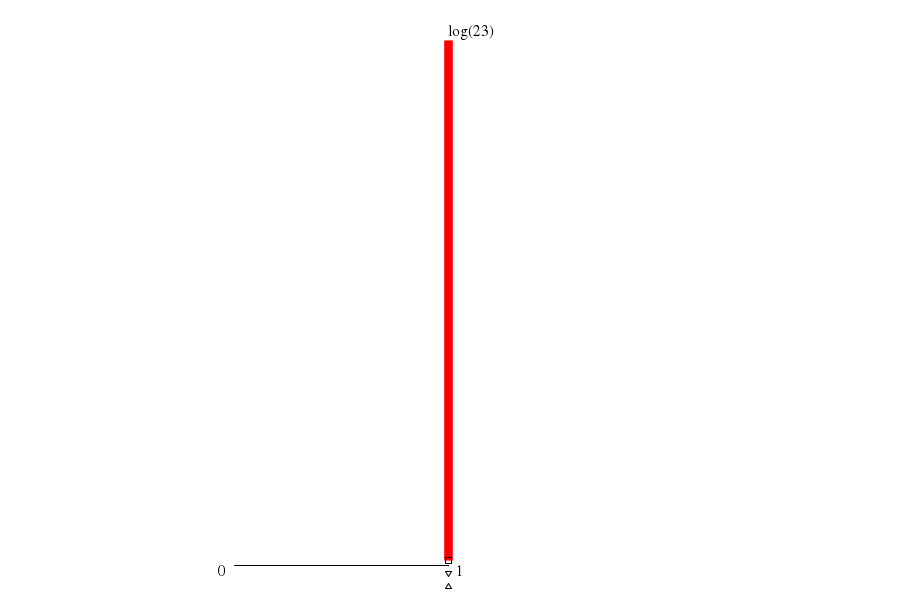

|  | ||
| maxs | mins | |
|
(21.sum) 1 |
(0.summ) 1 |
|
|
(22.sum) 1 |
(20.sum) 1 |
|
|
(1.summ) 1 |
(19.sum) 1 |
|
|
(5.summ) 1 |
(18.sum) 1 |
|
|
(3.summ) 1 |
(17.sum) 1 |
| cores (cores) | mode ▵ | μ ▫ | (μ+σ)/μ | 1st alloc. max value | 1st alloc. max through ▿ | 1st alloc. min waste |
| -- 1.000 |
-- 1.000 |
-- 1.000 |
throu: 1.000 waste: 0.00%
alloc: 1.000 |
throu: 1.000 waste: 0.00%
alloc: 1.000 |
throu: 1.000 waste: 0.00%
alloc: 1.000 |